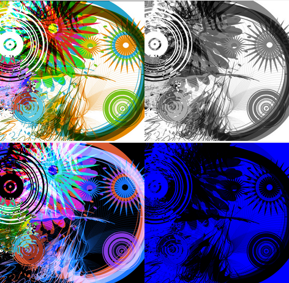
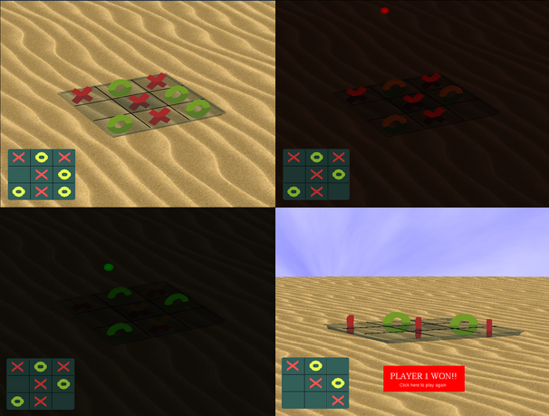
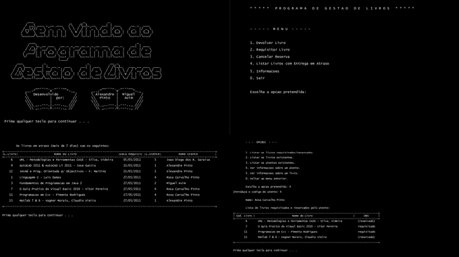
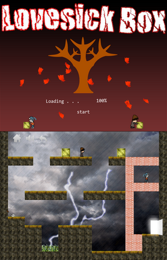
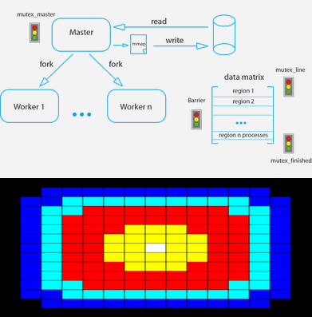
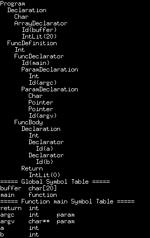
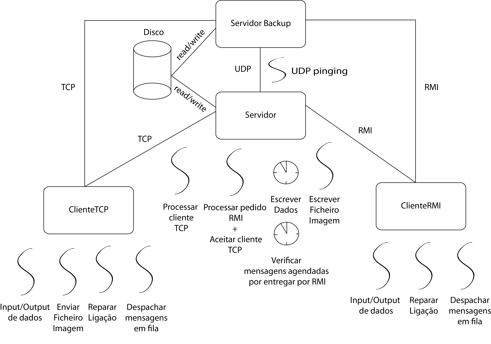
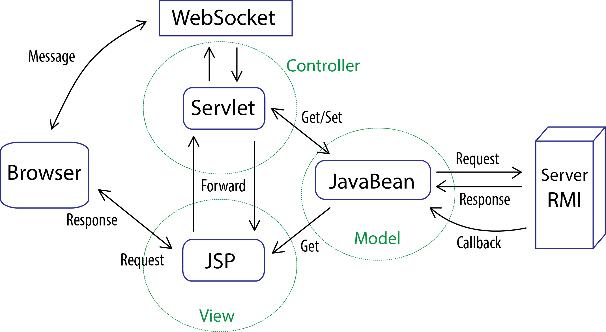

Expert Contact:
- Type: Joint Academic Work
- Description:
This project was carried out in the context of the Software Project Management
course. The objective of the project was to build a new way of communication
between the nurses and patients with breast cancer during chemotherapy sessions.
This project was a partnership between the research team working at Institute of
Health and Care Sciences of the University of Gotemburg and the University of
Coimbra and was conducted by a multidisciplinary team.
- Role in the team: Developer
- Technologies used: Struts2, Hibernate Generic D.A.O. Framework, Bootstrap, Git

Image editing:
- Type: Joint Academic Work
- Features:
- Grey tones
- Change basic colors
- Horizontal and vertical reflections
- Negative image
- Rotations
- Cutting and Bordering
- Hide and read hidden messages
- Encrypt and decrypt images
- Technologies used: Python 2.6 + PIL(Python Imaging Library)
Source code

Tic Tac Toe game:
- Type: Joint Academic Work
- Features:
- Day/Night/Fog environments
- Lights
- Animations
- Free movements
- Rotations
- Realistic sky (built with Perlin Noise) and lots of sand
- Technologies used: C, OpenGL 1.0 API
Source code

Library management system:
- Type: Joint Academic Work
- Features:
- Request/Return books
- Make/Cancel Reservations
- Show outdated deliveries
- Show existing books/books details
- Rotations
- Show current requests/reservations
- Technologies used: C
Source code

LoveSick Box game:
- Type: Joint Academic Work
- Features:
- Puzzle game
- History based game (Inspired by the movie "Eternal Sunshine of the Spotless Mind")
- More than 15 levels
- Chapter selection
- Awesome scenarios
- Soundtrack
- Technologies used: Flash ActionScript 3.0
Play it here!

Temperature Variation on a surface along the time:
- Type: Joint Academic Work
- Technologies used: C, IPC: Semaphores, shared memory, mapped memory
Source code

qC Compiler:
- Type: Joint Academic Work
- Features:
- Lexical analyser
- Error handling
- Syntax Analyzer (Abstract Syntax Tree)
- Semantic Analyzer (Symbol Table + Error Handler)
- Technologies used: C, Lex & Yacc
Source code

SocialMore: A distributed Social Network
- Type: Joint Academic Work
- Features:
- Create Posts
- Create Delayed Posts
- Edit Posts
- Reply to Posts
- Delete Posts
- Add Pictures
- Delete Pictures
- Send Direct Messages
- Fail Over Solution
- Technologies used: Java SE 6, Java TCP/UDP Sockets, Java RMI

Web SocialMore: A web-based version of SocialMore
- Type: Joint Academic Work
- Features:
- SocialMore Features
- Web Chat
- Integration with Facebook
- Technologies used: Java SE 6, Java TCP/UDP Sockets, Java RMI, JSP, Java Servlets, JavaBeans, Websockets, REST API